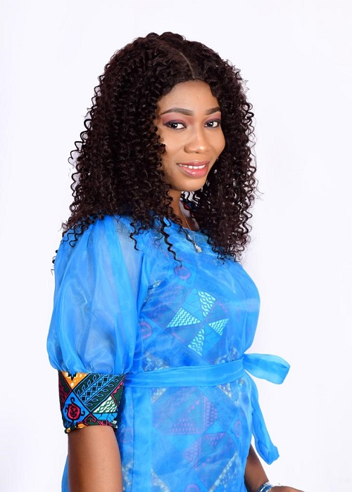

|
|
||||||||||||
|---|---|---|---|---|---|---|---|---|---|---|---|---|
|  |
LINDA KUMAH +233 243 90 1942 | lindakumah03@gmail.com P. O. Box 506, Takoradi linkedIn | GitHub | Stack OverFlow |
| Date of Birth | 11/05/1991 |
| Nationality | Ghanaian |
| Hometown | Ahwerase, Eastern Region |
| Languages | English, Twi, Fante |
| African Institute for Mathematical Sciences | Aug 2015 - June 2016 | MSc (Mathematical Sciences) |
| University of Cape Coast | Aug 2010 - May 2014 | BSc (Mathematics with Economics) |
| Fijai Senior High School | Sep 2005 - May 2008 | WASSCE |
| Tutor, African Institute for Mathematical Sciences Schools Enrichment Center (AIMSSEC) |
| Feb - May 2016 |
| Teaching Assistant, University of Cape Coast |
| Sep 2014 - Aug 2015 |
| Mrs. Henrietta Nkansah | Mrs. Jessica Howard |
|---|---|
| Lecturer | The Executive Banker |
| University of Cape Coast | Stanbic Bank |
| Ghana | Takoradi Branch |
| hertylady@yahoomail.com | boakyewaaj@stanbic.com.gh |
| 024 498 0448 | 024 370 7210 |